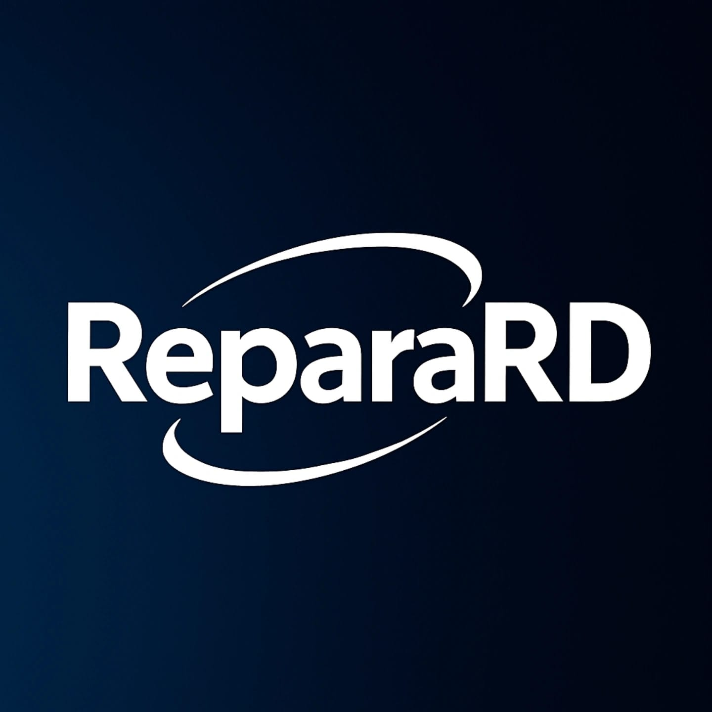
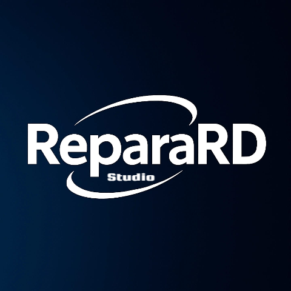

Nuestras Aplicaciones
Innovación desarrollada para impulsar el Caribe hacia el futuro digital.
ReparaRD
La aplicación que conecta técnicos confiables con usuarios en toda la República Dominicana. Un sistema moderno que permite solicitar reparaciones, chatear, ver reputaciones y más.
Descargar Aplicación

ReparaRD Studio
La plataforma diseñada para técnicos especializados en reparaciones. Un sistema moderno y eficiente que asigna cada trabajo según la experiencia y especialidad del profesional, garantizando calidad y rapidez en cada servicio.
Descargar Aplicación
